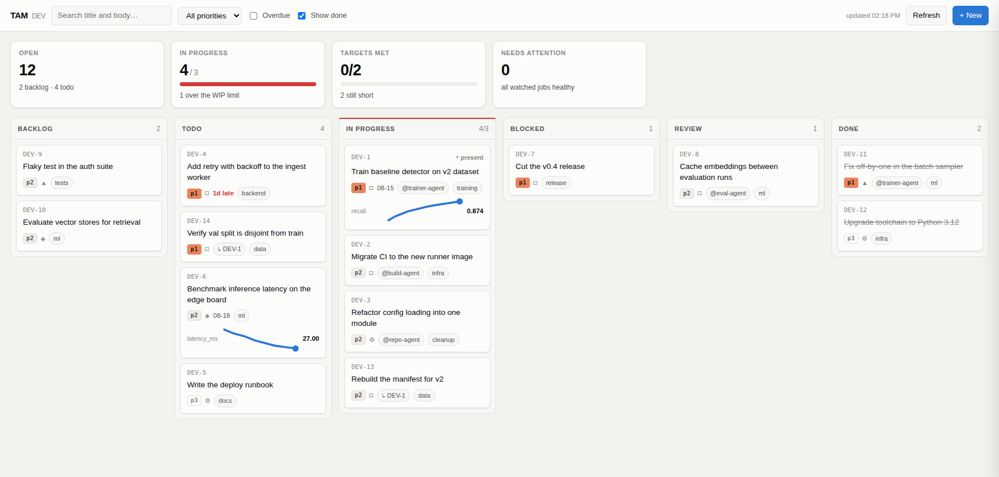

A Local Jira for Your Agents
If you run more than a couple of coding agents, you've probably hit this: each one lives in its own editor window, some of them on other machines, and none of them have any idea the others exist. I got tired of being the only thing holding it together, so I built a small shared task board for them.
It creeps up on you. One task gets a window and an agent. The next touches a different repo, so it gets its own. A third needs the GPU box, so it runs over SSH somewhere else. A fourth is a training run that'll take two days. By Friday there are ten windows across three machines, all doing real work, all completely unaware of each other.
Then someone asks what's actually running — often that someone is you, on Monday. Answering means opening ten windows, SSHing into two machines, and squinting at scrollback from sessions that ended days ago and took their context with them. At that point you're not managing tasks. You're being a message bus, which is the exact job you got the agents for.
That's Argus: a local, Jira-shaped issue tracker for you and your agents. SQLite and the Python standard library, no dependencies, no account, no service. Agents file and update issues through native tools, there's a web board for you, and a scanner quietly checks whether what the agents say matches what your machines are actually doing.
{kind=link}

The board on a demo project (click for full size). In progress is amber because four things are running against a WIP limit of three; one card is a day late; two carry metric sparklines against a target they haven't reached yet.
It's one self-contained HTML file — no build step, no CDN, no JavaScript framework. Drag a card to move it and illegal moves dim while you drag, because the page asks the server which transitions are legal instead of keeping its own copy of the rules.
Agents write down what they did. The scanner writes down what actually happened. The board shows you both.
What your agents get
Agents talk to it over MCP, so filing work is a normal tool call
rather than a wrestling match with shell quoting —
tam_create_issue, tam_transition_issue,
tam_add_comment, tam_link_issues and friends.
Point an editor at it once and every session in that workspace can read
and write the board:
{ "mcpServers": { "tam": { "command": "/path/to/argus/bin/tam-mcp",
"env": { "TAM_API_URL": "http://10.0.0.10:8787",
"TAM_ACTOR": "navy-agent" } } } }
Give each agent its own TAM_ACTOR and ten agents stop
being one anonymous blur. Every change writes an audit row — who,
which field, from what to what, when — and it sticks around even if
the issue is later deleted. Six weeks on you can still ask who closed
something and what they said about it.
Issues look how you'd expect: type, priority, assignee, due date,
labels, subtasks, and links like blocks and
blocked_by. The quietly important bit is the
stable key. TAM-19 is a name a different
agent, in a different window, three weeks later, can drop into a
comment — "still blocked by TAM-19" — and have it actually mean
something. Keys are never recycled, so a reference can't silently
point at the wrong thing.
A few rules, so it doesn't turn to mush
Any task board rots if nothing holds it up. With agents it rots faster, because agents are agreeable: ask one to tidy the board and it will cheerfully close everything. So the rules live in the database rather than in a prompt you hope gets followed.
- Blocked needs a reason. Moving something to
blockedrequires either a written cause or ablocked_bylink. Blocked items with no explanation are how boards turn into noise. - Open subtasks keep a parent open. You can override
with
--force, and the audit log remembers that you did. - Status only moves through transitions. It can't be set with a field edit, so nobody sidesteps the workflow by finding a different endpoint.
All of that lives in one core, and the CLI, the HTTP API, the MCP server and the board are thin layers on top with no logic of their own. A test runs the same operation through all three and checks they agree — including that they refuse the same things. Which means an agent can't slip past a rule by knocking on a different door.
The bit I actually use most
Self-reported status is fine until it isn't. An agent that dies
mid-task leaves an issue sitting in in_progress forever,
and an agent that's simply mistaken sounds exactly like one that's
right.
So you can tie an issue to something real, and a timer checks it every fifteen minutes:
tam watch add TAM-1 slurm 38574 --config '{"parser":"yolo"}'
tam watch add TAM-10 path /mnt/datasets/corpus --host worker-01
tam watch add TAM-4 http 'https://api.example.com/jobs/12' \
--config '{"state_path":"status","state_map":{"RUNNING":"running"}}'It only ever reads, never touches your jobs, and it comments on the issue when the state changes. A training run that died at 3am is on the board when you get up, instead of being discovered when you notice a log stopped growing. Slurm, processes, paths, any shell command and any REST endpoint work out of the box; anything weirder is a small Python file you drop in a folder.
Training scripts can push, too — a little standard-library reporter records params and per-epoch metrics against an issue, with targets so the board can tell you met or not met, and by how much. It swallows its own errors on purpose: reporting should never be able to kill the job it's reporting on.
One check-in a day
Agents run all night; you don't. So there's a digest, split into a half that can't fail and a half worth your attention. At 07:55 a timer does pure local computation — no network, no agent — and writes the day's summary: overdue, due today, in progress, blocked and why, stale, the triage pile, what closed since yesterday, and the deltas. At 08:00 you read it and say what you want in plain English, and those decisions land in the database with your name on them.
The generating half never depends on anything being up. The deciding half stays yours, because that's the part actually worth doing.
Give it a go
It's public at github.com/genawass/argus, and there's genuinely nothing to install beyond Python 3.12:
git clone https://github.com/genawass/argus && cd argus
./bin/tam init
./bin/tam issue create -t "Renew TLS certs" -p p0 -d +7d
./bin/tam-api # board at http://127.0.0.1:8787/If your work spans machines, one host runs the API and everything else is just a URL and a token — nothing to install on the other boxes. The same applies to agents: point their MCP config at that URL and they're on the board, wherever they happen to be running.
Being upfront about the limits. This is built for
one person and their agents. There are no per-user permissions — one
token gets full read and write — so keep it on a network you trust.
One host owns the database and serves the rest, so if that machine is
down, so is the board until you restore a snapshot somewhere else. And
TAM_ACTOR is self-declared: the log records what an agent
says it is. That's exactly why the watches exist.
If you've got one agent on one machine, honestly, skip it — the scrollback is your record and it's fine. But the moment there are several, spread across machines, doing work that outlives any single session, a shared board stops feeling like overhead and starts being the only thing that knows what's going on.
Written from daily use running detector training and dataset work across a small cluster, with agents in separate editor windows all filing against one board. Argus is Python 3.12 standard library and SQLite, and it's public — issues, ideas and forks all welcome at github.com/genawass/argus.